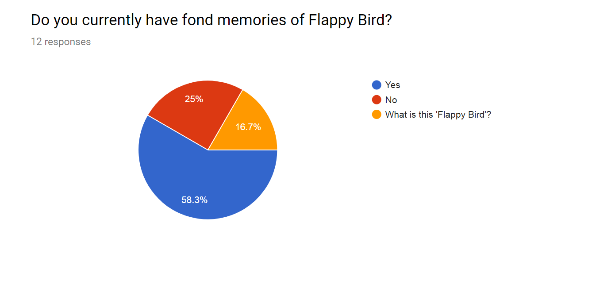
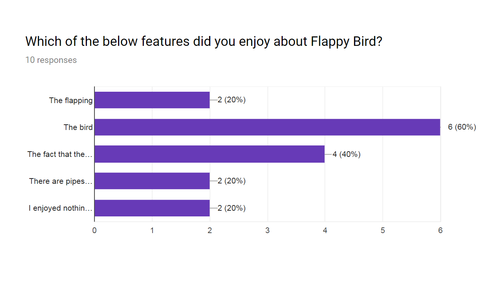
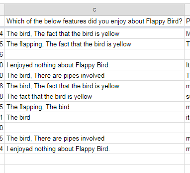
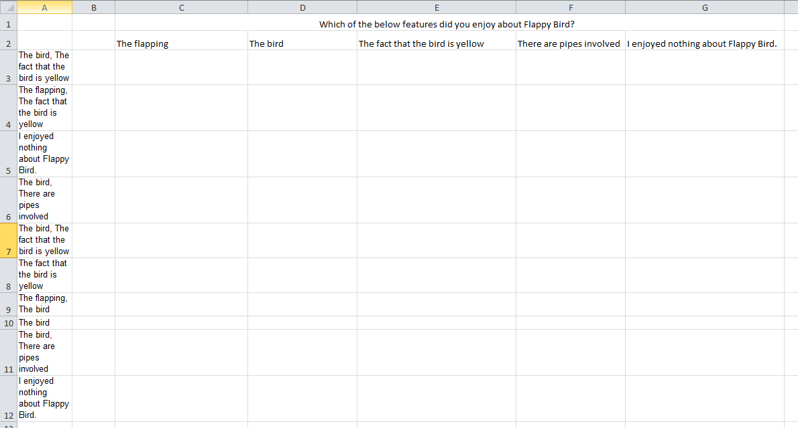
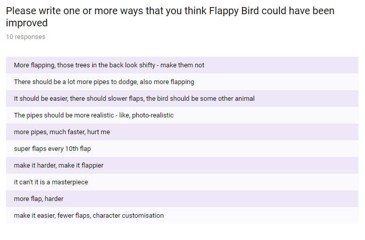

If you haven’t tried it already, Google forms is a very good option for performing simple qualitative data collection for free: it has a very nice interface, it has a lot of features that help with questionnaire best practice, and it even presents some simple graphs of your data after you have collected it. It also offers a lot of question customisation, allowing you to make your questions as closed or open ended as you need. There are times when you would take in this information raw too, wanting to hear personal, long-form accounts of a target demographic’s opinions and thoughts, but then there are times when you want to statistically compare within or between groups. For this, you need numbers, and Google forms doesn’t easily output numbers.
First thing of note, this will be written assuming you’re trying to quantify the data from a spreadsheet that Google Forms has outputted, and you can get it to output a spreadsheet of this data with the below button, found at the top right of your ‘Responses’ page:
If you’re Excel savvy already and you’re just looking for the formulas to use without the explanations, I will put them below and then go into further detail afterwards.
Yes/No questions
=IF(AW3 = "Yes", 1, 0)
Multiple choice questions
=IF(ISNUMBER(SEARCH(C$2,$A3)), 1, 0)
Often, yes no questions can be displayed using descriptive statistics (X amount of people said ‘yes’, Y amount of people said ‘no’, and here are percentages), and Google Forms is quite good at presenting this kind of data in a pretty clean way. I’ll put a link to the example data I made for this. But the graph below is the kind of thing that Forms will pump out for you:
Hovering over the sections in the Forms output will tell you percentages and the number of people that chose each topic, but in order to compare this data to other sources you need to code it into numbers (or use something like a logistic regression, but that depends on your data and needs and is a little out of scope for this tutorial). In the example above, we would only want to code the ‘Yes’ and the ‘No’ answers, because our quiz was aimed at Flappy Bird players. If they don’t know what Flappy Bird is, their responses won’t help us answer our questions, so we remove it; this is our exclusion criteria.
IF functions in Excel are the simplest way of coding Yes/No answers, so let’s break that down quickly. In Excel, their explanation is as follows:
IF(logical_test, [value_if_true], [value_if_false])
Logical test: this is checking one thing against another, essentially. This is where you compare the cell with a number or string of normal letters and, if the answer determines where we go next. There are lots of comparators, but the only one we need here is the equals sign.
Value if true: This is what will happen if the logical test turns out as being true. So with 11 = 11 for example, this part of the formula would run.
Value if false: Similar to value if true, if our logical test is not correct, this is what runs. So with 11 = 12, this would occur because the two numbers are not equal.
=IF(AW3 = "Yes", 1, 0)
Going back to the formula from earlier now, we can see that if the data in cell AW3 say ‘Yes’, the number in the cell that we have written the formula in will be a 1. Any other answer in that cell will become 0. You can drag your formula cell down using the cross that appears when you hover over the bottom right of the cell and you’ve codified your question!
This does assume that you’ve already removed the people that said “What is this ‘Flappy Bird’?” though. If you didn’t remove them, this answer would also become 0 and could cloud our data. If you don’t want to go through that hassle, extending the formula a little can fix this issue.
=IF(AW3="Yes",1,(IF(AW3="No",0,"")))
So now, if the box says ‘Yes’ it will become a 1 as usual, but we have changed our false condition to another IF statement to check if it says ‘No’ too. If it does say ‘No’, the cell will change to a 0, and if it doesn’t say ‘No’ or ‘Yes’, the cell will become an empty string of characters, signified by the two quotation marks with nothing inside: “”.
Multiple choice questions are a little trickier, and the output for these in Google Forms is also quite nice if you only want your descriptives.
If you wanted to know if there is any correlation between the people who have fond memories of flappy bird, and the people that liked the fact that there are pipes in the game, you would want to reduce these to numbers too and codify them in the same way you did your Yes/No questions. This takes a little more formatting than you might have anticipated. This is the output from forms, for example:
As you can see, each answer the participant selected is in the same cell and this causes us a lot of problems when it comes to figuring out correlations or other analyses. To codify this then, we need to give each potential answer its own column. For the formula to work though, it is very very important that the heading to each column is EXACTLY the same as the answer that your participants could choose.
And now we can actually use our formula to easily cheat our way through this! I will say first that you could, if you were masochistic enough, create a very long IF statement with loads of embedded IF statements in the false conditions, but there is a much quicker way to do it that we can break down right now.
=IF(ISNUMBER(SEARCH(find_text, within_text)),[value_if_true], [value_if_false])
As we already know how the IF statement works there, I won’t go into detail again on the ‘value_if_true/false’ bits. Instead, let’s walk through the logical test in this case.
ISNUMBER: This return true if the cell you reference with it contains a number, and return false if you reference letters or words. We use this with the SEARCH function because it converts the usual results of the SEARCH function into TRUE, or FALSE, which our IF statement can understand a little easier.
SEARCH: Usually this is used to tell you where a piece of text is in another piece of text, and it usually outputs a single number. If you reference the letters ‘AK’ in the ‘find_text’ bit, and then reference a cell with the word ‘Break’ in the ‘within_text’ bit, it would spit out the number ‘4’. If the letters or words in ‘find_text’ aren’t found, it outputs with an error.
SO what is actually happening is the SEARCH function will give a number if the searching words are in the text, and this number is taking in by ISNUMBER which outputs TRUE (because it is now a number). The IF statement then pushes out the ‘value_if_true’ bit! The below formula will take in the column header as the ‘find_text’, and will take the answers from the Google Sheets spreadsheet as the ‘within_text’, then push out a 1 or 0 depending on the result!
=IF(ISNUMBER(SEARCH(C$2,$A3)), 1, 0)
You may have noticed the $ sign there too, and this is actually very important in this case. The $ sign locks the following term in place, so if you drag the formula along it will still reference that column or row. For our ‘find_text’ we always want it staying in the column header, so we lock the row (add a dollar sign before the number), and we always want our ‘within_text’ referencing the same column of Google Sheets answers, so we put the $ sign in front of the letter(s)! Drag the formula out from the bottom right cross symbol and we get…
And there you go!
Sometimes you’ll want to take in open ended questions too, where your participants are allowed to write whatever they want. This is great for finding things that you may not have even thought of when giving those restrictive questions, and is a great way of getting actual opinions on something to do with as you need. Google Forms handle them well, as always, and you get this kind of output:
As great as this method is though, it can be difficult to quantify. I will say first though, there are many, many reasons that you might not want to quantify it at all. Raw data like this is useful in itself, and you can pick up a lot from just reading participant’s words as opposed to reducing them into numbers.
I won’t go into too much detail here, this is an extra little section after all, but there are a couple of main ways that you would typically explore this data and those are…
Word frequency analysis: this is as simple as it sounds! You use some kind of program to count how many times each word appears, and that will give you some idea of what your participants are broadly thinking. This can be good and bad depending on your needs though: while it will show you which words come up a lot, it won’t tell you how those words are qualified. In the above (admittedly questionable) example, if we used a simple (though very nice) tool like www.online-utility.org/text/analyzer.jsp, we would see that ‘pipes’ and ‘flaps’ are spoken about a few times each, but, from our raw data, we can see that they’re spoken about in very different ways each time. One person wants more flap, another wants less; we could look for phrases, true, but even phrasing varies naturally between people.
Thematic coding: this way simply involves making a few categories based on common answers, your hypotheses, or even results from a word-frequency analysis (the first and last of those are know as emergent themes) and either tallying every time each category is mentioned yourself, or using specialised software like Quirkos to see how common each theme is. By eye or by software each have their own problems, such as the human error element of deciding themes and whether things fit in or not when it isn’t immediately obvious, or the computer problem of requiring good spelling from participants and planning of what terms fit into what themes before you start. This choice might be determined by your data set though, as no one has the cognitive capacity to read a novel worth of data and code it with consistent accuracy the whole way through!
Formulas are pretty great.